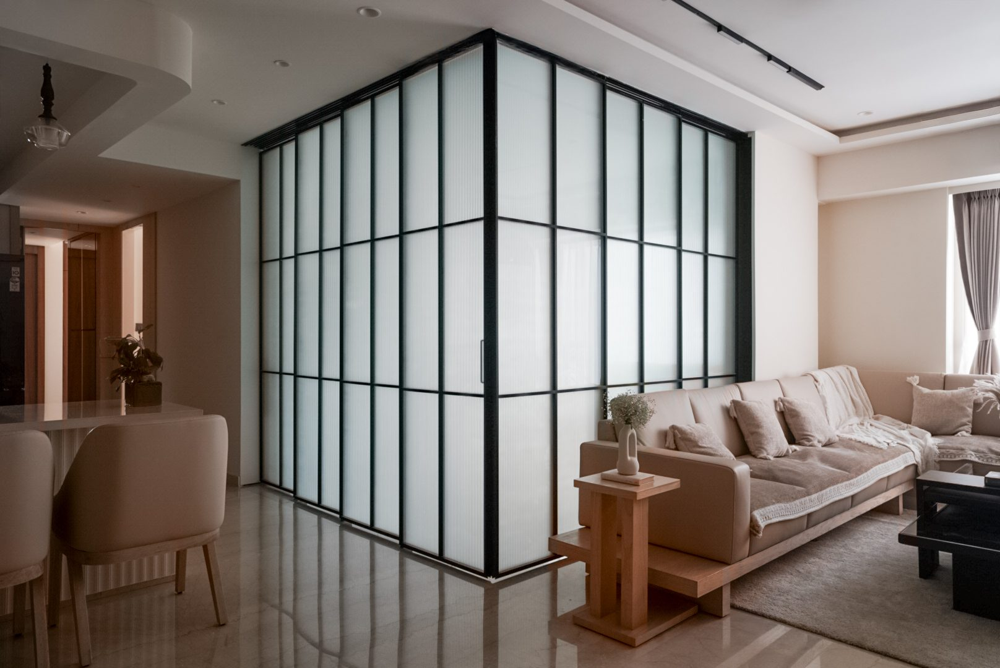

Residential

Interiors built around how a room is actually used.
Scroll
Every project starts with the people who'll actually live in the space — how they move through it, what they store, where the light falls at 7pm. The material choices follow from that: warm timber and brass over anything that dates quickly, stone and glass used sparingly, so the room reads calm ten years in as much as on handover day.
8+projects delivered
3cities — Mumbai, Ahmedabad, Delhi
4typologies — home, retail, healthcare, office
2022–practicing across AUM Interior Studio & Interarch
Selected work
Three projects, in fullRetail
Jade Pink
Healthcare
Dr Bansal Nursing Home
More projects
Five further interiors{kind=link}
{kind=link}
{kind=link}
{kind=link}
{kind=link}
The studio
Omkar Patil is an interior designer working across residential, retail and healthcare interiors — currently with AUM Interior Studio, previously with Interarch Architects & Interiors.
The work stays close to how a space is actually run day to day: a kitchen a family cooks in every morning, a store floor staff have to restock, a ward that needs to be cleaned in minutes. Materials are chosen to hold up to that use, not just photograph well on handover day.
- Residential interiorsApartments & bungalows
- Retail & hospitalityFlagship stores, showrooms
- Healthcare interiorsHospitals & nursing homes
- Commercial interiorsOffices & waiting areas
- 3D visualisationConcept design & walkthroughs